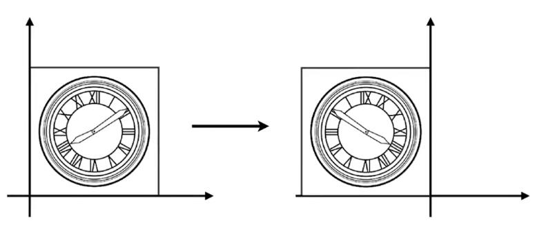

2D变换(2D Transformation)
[06：52]
缩放(Scale)

图中，横轴和纵轴都缩小了\(\frac{1}{2}\)，用数学形式表达：
\[ x'=sx \\ y'=sy \] 其中，\((x',y')\) 是缩放后的坐标，\(s\) 是缩放尺度，\((x,y)\) 是原坐标。
将该式子写成矩阵的形式为：
\[ \left[ \begin{array}{c} x'\\ y'\\ \end{array} \right] =\left[ \begin{matrix} s& 0\\ 0& s\\ \end{matrix} \right] \left[ \begin{array}{c} x\\ y\\ \end{array} \right] \]
即，得到缩放矩阵为：
\[ S_{0.5}=\left[ \begin{matrix} s& 0\\ 0& s\\ \end{matrix} \right] =\left[ \begin{matrix} 0.5& 0\\ 0& 0.5\\ \end{matrix} \right] \]
如果缩放不是均匀的，例如 \(x\) 轴缩小0.5，\(y\) 不变，则用矩阵表示为：

\[ \left[ \begin{array}{c} x'\\ y'\\ \end{array} \right] =\left[ \begin{matrix} s_x& 0\\ 0& s_y\\ \end{matrix} \right] \left[ \begin{array}{c} x\\ y\\ \end{array} \right] \]
即，得到缩放矩阵为：
\[ S_{0.5,1.0}=\left[ \begin{matrix} s_x& 0\\ 0& s_y\\ \end{matrix} \right] =\left[ \begin{matrix} 0.5& 0\\ 0& 1.0\\ \end{matrix} \right] \]
反射(Reflection)
反射也称对称。

上图中，原图相对于 \(y\) 轴做了反转，用等式表示为：
\[ x'=-x\\ y'=y \]
该等式可以用矩阵表示为：
\[ \left[ \begin{array}{c} x'\\ y'\\ \end{array} \right] =\left[ \begin{matrix} -1& 0\\ 0& 1\\ \end{matrix} \right] \left[ \begin{array}{c} x\\ y\\ \end{array} \right] \]
切变(Shear)

上图是切变的例子。可以看到，图像上任意一点的 \(y\) 轴坐标值并未改变，仅 \(x\) 轴坐标改变了。则可以确定的是 \(y'=y\)，继续观察，当 \(y\) 为0时， \(x\) 没有变化，当 \(y\) 为1时， \(x\) 都水平右移了 \(a\) 长度，当 \(y\) 为1/2时， \(x\) 移动了 \(\frac{a}{2}\)，所以，找到了规律， \(x\) 移动距离为 \(ay\)。用矩阵表示为：
\[ \left[ \begin{array}{c} x'\\ y'\\ \end{array} \right] =\left[ \begin{matrix} 1& a\\ 0& 1\\ \end{matrix} \right] \left[ \begin{array}{c} x\\ y\\ \end{array} \right] \]
📌补充： 找到变化规律，就能写出变换的表达式
旋转(Rotate)

✅旋转默认是绕原点(0,0)旋转；默认旋转方向是逆时针旋转。

旋转的矩阵表达式推导：
💡思路： 旋转的图像每一点都需要符合表达式，那么，特殊的点也必须符合，所以从特殊点入手，找出旋转的规律，从而推导出旋转的矩阵形式表达。
假设有一个正方形，如图所示。

将其旋转 \(\theta\) 角度。

我们的目的是得到 \(\left( x,y \right) ->\left( x',y' \right) \)
矩阵的形式为： \(\left[ \begin{array}{c} x'\\ y'\\ \end{array} \right] =\left( \begin{matrix} A& B\\ C& D\\ \end{matrix} \right) \left( \begin{array}{c} x\\ y\\ \end{array} \right) \)
只要找出规律，求出ABCD即可。
我们将目光先聚集在下图中的红点。

最基本的，我们可以知道一些信息，例如，原本的(1,0)点被旋转成为(\(cos\theta，sin\theta\))，

于是，我们就可以初步得到：
\( \left( \begin{array}{c} \cos \theta\\ \sin \theta\\ \end{array} \right) =\left( \begin{matrix} A& B\\ C& D\\ \end{matrix} \right) \left( \begin{array}{c} 1\\ 0\\ \end{array} \right) \)
也就是：
\(\cos \theta =A\cdot 1+B\cdot 0 = A\)
\(\sin \theta =C\cdot 1+D\cdot 0 =C\)
现在，已经得到了A和C。接着，我们选择另一个点。

不难得到，\( B=-sin\theta, D=cos\theta \)
所以有
\( \left( \begin{array}{c} \cos \theta\\ \sin \theta\\ \end{array} \right) =\left( \begin{matrix} cos\theta& -sin\theta\\ sin\theta& cos\theta\\ \end{matrix} \right) \left( \begin{array}{c} 1\\ 0\\ \end{array} \right) \)
因此
$$ \left[ \begin{array}{c} x'\\ y'\\ \end{array} \right] =\left[ \begin{matrix} \cos\theta& -\sin\theta\\ \sin\theta& \cos\theta\\ \end{matrix} \right] \left[ \begin{array}{c} x\\ y\\ \end{array} \right] $$
线性变换
上述缩放、反射、切变和旋转，都称为线性变换，可以统一由下面的表达式来表达：
\[ x'=ax+by\\ y'=cx+dy \]
\[ \left[ \begin{array}{c} x'\\ y'\\ \end{array} \right] =\left[ \begin{matrix} a& b\\ c& d\\ \end{matrix} \right] \left[ \begin{array}{c} x\\ y\\ \end{array} \right] \]
\[ X'=MX \]
❗注意： 要用相同维度的向量，去和X相乘。旋转矩阵必须满足\(R^{-1}=R^T\)
本文出自CaterpillarStudyGroup，转载请注明出处。
https://caterpillarstudygroup.github.io/GAMES101_mdbook/